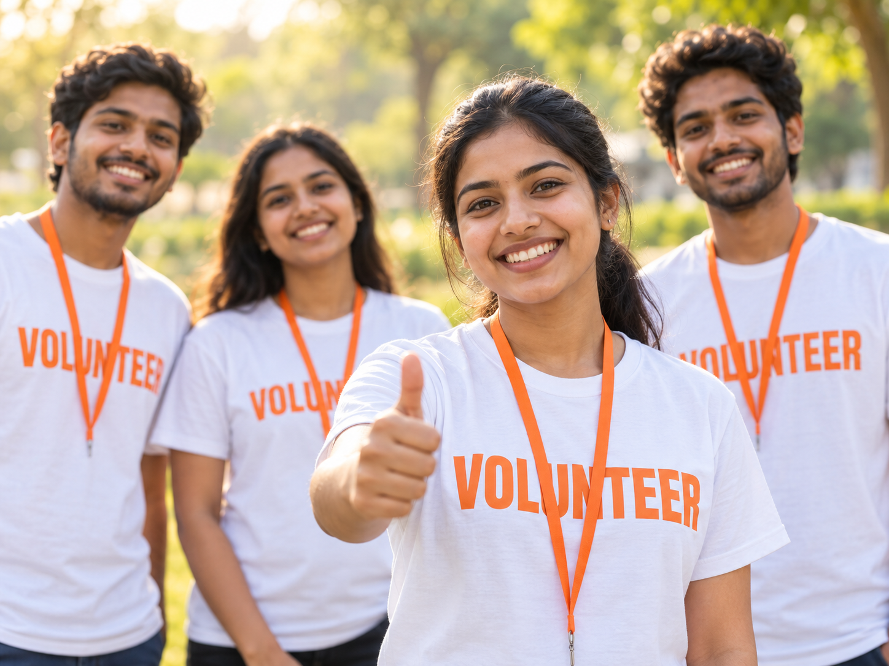

Volunteer Profiles
Store complete volunteer details, skills, interests and availability.
Recruit, manage and engage volunteers with Donexia. Keep volunteer records, assign tasks, track participation and organise events – all in one place.

Store complete volunteer details, skills, interests and availability.
Assign tasks, track progress and manage assignments easily.
Organise and manage volunteer events, campaigns and programs.
Get detailed reports on volunteer participation, activities and impact.
Manage your volunteers in just a few simple steps.
Import or add volunteer details manually.
Create tasks and assign them to volunteers.
Monitor volunteer participation and progress.
Get insights and measure your impact.
| Name | Skills | Status | |
|---|---|---|---|
| PPriya Sharma | priya@example.com | Event Management | Active |
| RRahul Mehta | rahul@example.com | Communication | Active |
| AAmit Kumar | amit@example.com | Fundraising | Active |
| NNeha Verma | neha@example.com | Teaching | Inactive |
| SSonal Patel | sonal@example.com | Social Media | Active |
Donexia helps NGOs streamline volunteer management and build a more engaged community to support their mission.
Empower your volunteers and make a bigger impact.
Keep all volunteer information in one place.
Keep volunteers informed and connected.
Track participation and get detailed insights.
Automate communication and reporting.
Bring people, activities and impact together in one place.
Match skills and interests to meaningful opportunities, and keep every volunteer’s contribution visible.
Give coordinators a shared view of profiles, assignments and events so everyone stays connected.
Reduce scattered records and repetitive administration, so your team can focus on the work that matters.
Join NGOs using Donexia to manage volunteers, organise events and create a bigger impact.